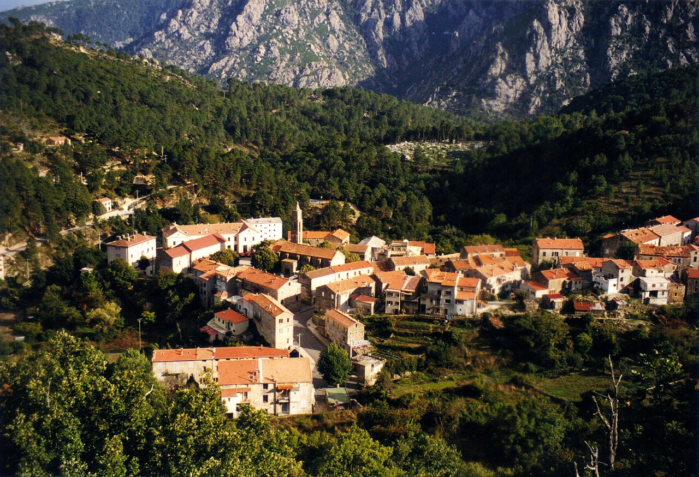

Ghisoni faluja drámai látványt nyújt, ahogy a Monte Renoso masszívumának lábánál, a Kyrié és Christe monumentális sziklafalainak közvetlen és nyomasztó közelségében elterül. A település építészeti arculatát a szorosan egymás mellé és egymásra épült, robusztus, sötétszürke gránitból emelt többszintes lakóházak határozzák meg, amelyek a 16. század óta szinte változatlan formában dacolnak az elemekkel és a sziget zord történelmével. Ez a nyers, monumentális kővilág méltóságteljes és időtlen atmoszférát áraszt, amelyet a szűk, meredek utcácskák hálózata tesz még zártabbá. A falu felett őrködő két hatalmas sziklaorom nevét a helyi emlékezet szerint egy középkori püspökről kapta, akit a helyi útonállók megadásra kényszerítették, így a görög liturgia „Kyrie eleison" és „Christe eleison" fohászai örökre beleégtek a táj szakrális és mitikus névtanába.
Földrajzi elhelyezkedése révén Ghisoni a belső hegyvidék egyik legfontosabb stratégiai és túrázási csomópontja, ahonnan a sziget legszebb fenyvesei, glaciális tavai és a Monte Renoso csúcsára vezető ösvények indulnak. Ez a központi szerep teszi a falut a bakancsos túrázók és természetjárók első számú bázisává, ami a nyári főszezon heteiben pezsgő, élénk élettel tölti meg a főutcát. Mivel a falu belső magjának meredek szerkezete és szűk sikátorai korlátozott keresztmetszettel bírnak, a megnövekedett forgalom idején a parkolóhelyek megtalálása komolyabb figyelmet és türelmet igényel. Érdemes a gépkocsit a település külső, tágasabb részein hagyni, és gyalogosan felfedezni a történelmi textúrákat, amely kiváló lehetőséget biztosít az utazás ritmusának lelassítására a vad és kanyargós hegyi szerpentinek előtt.
A település kulturális és közösségi fókuszpontja a falu szívében álló, ikonikus Neptun-kút (U Neptunu), amelynek míves öntöttvas alakja és hűs, kristálytiszta hegyi vize évszázadok óta a helyiek és az átutazók találkozóhelye. Ghisoni ráadásul egyike azon kevés korzikai faluknak, amelyek egy egészen egyedülálló, kettős identitással büszkélkedhetnek: a nyári, buja makkiflórával borított túraparadicsom mellett télen igazi alpesi síközpontként (Capannelle) működik. A falu feletti lejtőkön működő sípályák jelenléte egy sajátos, sportos és büszke karaktert kölcsönöz a közösségnek, ahol az öreg gesztenyefák árnyékában ülve, a helyi karakteres sajtokat és borokat kóstolva az utazó végleg megértheti a sziget belső lakóinak életérzését, ahol a zord hegyek tisztelete és az őszinte vendégszeretet elválaszthatatlanul eggyé válik.